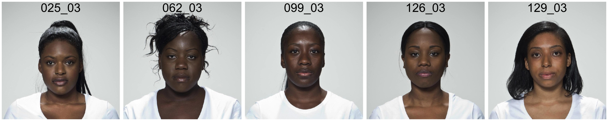
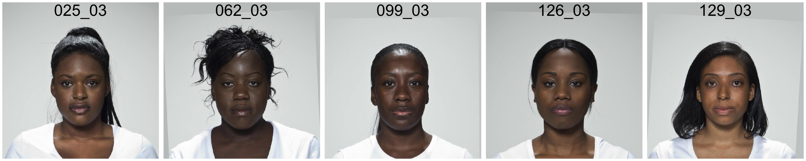
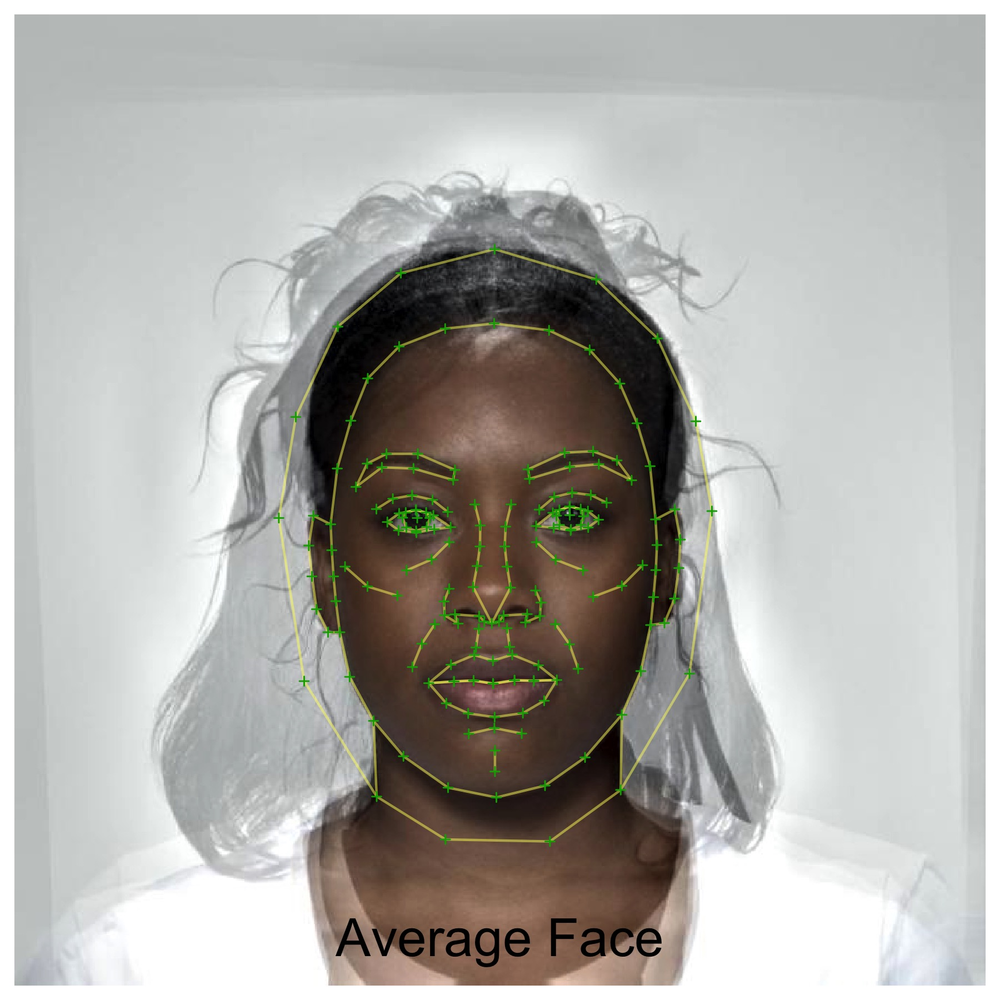
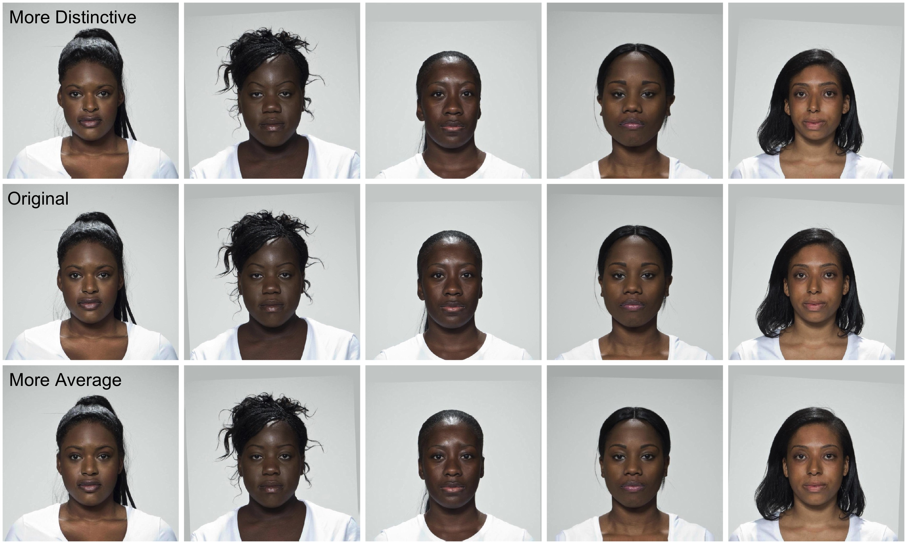

library(webmorphR)
#>
#> ************
#> Welcome to webmorphR. For support and examples visit:
#> https://facelab.github.io/webmorphR/
#> ************
#> Logged in as user 1
#> Your projects are using 25 Gb of 100 Gb
#> You have all permissions for project 1This vignette will show some recipes for common types of stimulus creation.
Let’s start with a set of images from the built-in image sets.
subset <- faces("london", pattern = "(025|062|099|126|129)") %>%
resize(.5)
plot(subset, nrow = 1,
save = "fig/subset.jpg", fig.width = 10, fig.height = 2)
Let’s align the images using Procrustes normalisation to the position of the first image. They need to have templates fitted to do this. The argument patch = TRUE tries to match the background colour as closely as possible.
normalised <- align(subset, patch = TRUE)
plot(normalised, nrow = 1,
save = "fig/norm.jpg", fig.width = 10, fig.height = 2)
Now we can make an average version of these faces. This uses the morphing functions available on the web app, so you need to have a webmorph account.
avg <- makeAvg(normalised)
#> Starting Upload...
#> ... 10 of 10 uploaded
#> Starting Deletion...
#> ... 10 of 10 deletedAlternatively, you can upload the files to your default project and then make the average from the uploaded files. This is best if you’ll be making more than one average or transform with them, so you don’t have to upload to the temporary directory every time.
wm_files <- fileUpload(normalised, "/newfolder/")
avg <- makeAvg(wm_files)If you set the arguments save, fig.width, and fig.height to plot(), the plot will save and display using knitr::include_graphics().
plot(avg, pt.plot = TRUE, line.plot = TRUE,
labels = "Average Face", label_y = 0.05, label_size = 8,
save = "fig/avg.jpg", fig.width = 6, fig.height = 6)
You can use this average face to transform the individual faces in distinctiveness and averageness.
avgdist <- makeTrans(trans_img = normalised,
from_img = normalised,
to_img = avg,
shape = c(-0.5, 0.5))
#> Starting Upload...
#> ... 10 of 10 uploaded
#> Starting Upload...
#> ... 10 of 10 uploaded
#> Starting Upload...
#> ... 2 of 2 uploaded
#> Starting 10 Transforms...
#> ... Transforms Completed
#> Starting Deletion...
#> ... 2 of 2 deleted
lab <- c("More Distinctive", "", "", "", "",
"Original ", "", "", "", "",
"More Average ", "", "", "", "")
c(avgdist[1:5], normalised, avgdist[6:10]) %>%
plot(labels = lab, nrow = 3, label_x = .4, label_y = .92,
save = "fig/avgtrans.jpg", fig.width = 10, fig.height = 6)
Now you can rename and save your individual stimuli in a directory to use in studies.
orig_names <- names(subset)
norm <- normalised %>%
rename(pattern = "_03", replacement = "", prefix = "norm_")
trans <- avgdist %>%
rename(new_names = rep(orig_names, 2),
pattern = "_03", replacement = "",
prefix = rep(c("dist_", "avg_"), each = 5))
write_stim(norm, "stimuli")
write_stim(trans, "stimuli")This script took 1.1 minutes to render all the included images from scratch.